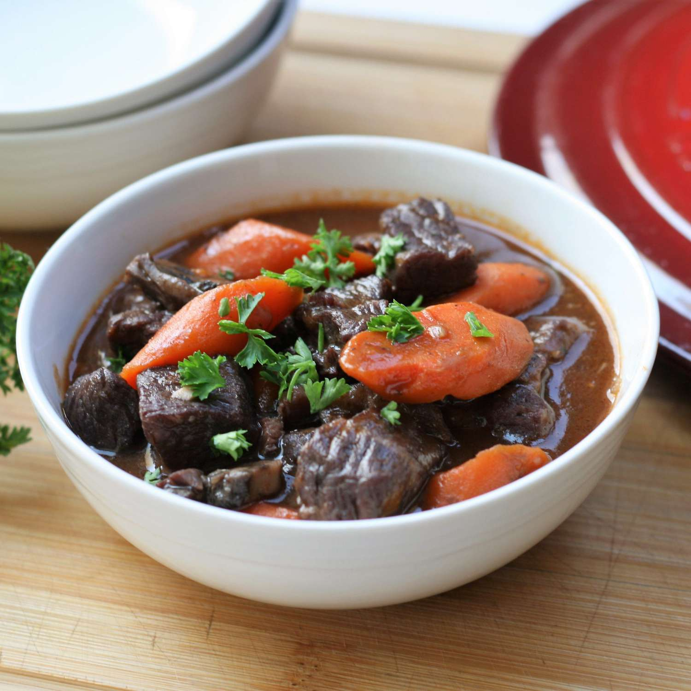

Beef Bourguignon

Description
This is the speedy, easy version of boeuf Bourguignon,
the classic French slow-cooked beef dish. Delicious
over cooked egg noodles or mashed potatoes. Leftovers
taste great as well - just reheat on the stove.
Ingredients (6 servings)
- 2 pounds boneless beef chuck roast, trimmed and
cut into 1-inch cubes
- 2 teaspoons kosher salt
- 1 teaspoon ground black pepper
- 4 slices thick-cut hickory smoked bacon, cut
into small cubes
- 1 medium white onion, cut into 1/2-inch dice
- 2 cloves garlic, minced
- 1 (8 ounce) package sliced baby portobello
mushrooms
- 2 tablespoons tomato paste
- 2 cups reduced-sodium beef broth
- 1 cup dry red wine
- 1 pound carrots, cut diagonally into 1/2-inch
slices
- 2 tablespoons all-purpose flour
- ½ cup chopped fresh flat-leaf parsley
Steps
- Toss together beef pieces, salt, and pepper in a
medium bowl; set aside.
- Cook bacon in a Dutch oven over medium-high heat
until fat is rendered and bacon is beginning to
brown, 7 to 8 minutes. Add seasoned beef to bacon
and cook, stirring often, until well browned, 7 to
8 minutes. Add onion and cook, stirring often,
until beginning to soften, 2 to 3 minutes. Add
garlic and cook, stirring constantly, for 1
minute.
- Add mushrooms and tomato paste to mixture and cook,
stirring occasionally, for 4 minutes. Stir in broth,
wine, and carrots and bring mixture to a boil.
Reduce heat to low. Cover and cook for 40 to 45
minutes or until beef is fork-tender.
- Uncover and remove 1/2 cup broth to a 1-cup glass
measuring cup. Whisk in flour until completely
combined and smooth. Stir flour mixture back into
beef mixture and stir constantly until thickened
slightly, 4 to 5 minutes. Sprinkle with chopped
parsley and serve immediately.